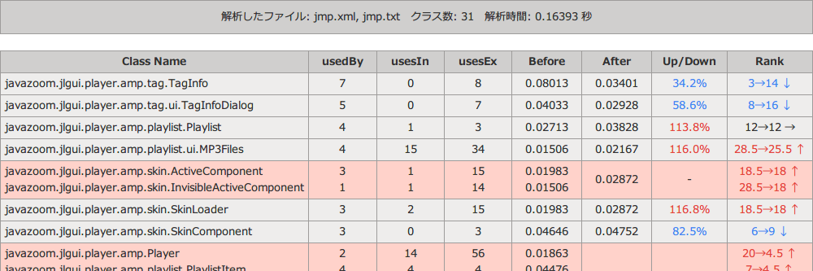

このツールとは
コンポーネントランク [1] の手法に基づいて、各 Java クラスの評価値を求めるツールです。 評価値は0～1の範囲で表現され、値が大きい方がそのソフトウェアにおける重要度が高いということになります。
このツールが従来のコンポーネントランクと違う点は、コードクローンの関係を評価値の計算に組み込んでいる点です。 コードクローンの存在している部品を1つの部品とみなし、評価値を計算します。
解析の手順
このツールを利用する準備として、 Classycle [2] と CCFinder [3] という2つのツールを使います。 次のような手順で解析をおこなうことになります。
- 部品群の利用関係を Classycle で解析し、 XML ファイルを取得
- 部品群のコードクローンを CCFinder で解析し、 TXT ファイルを取得
- 上で得られた XML ファイルと TXT ファイルをこのツールで解析
使い方
まず、Apache と PHP をインストールしてください。インストール方法はインターネットで調べればいくらでも出てきます。ここあたりが参考になるかもしれません。
Apache と PHP がインストールできたら、「 C:\Apache\htdocs 」などに「 crc 」フォルダを丸ごと置きます。あとは設定をおこない、ブラウザで crc.php を開くだけです。crc.php をエディタで開くと先頭付近に次のような記述があります。 ツールをただ使うだけであれば、変更が必要なのはこの部分だけです。
// -----------------------------------------------------
// 設定
// -----------------------------------------------------
// Classycleファイルの設定
$file_class = "○○.xml";
// CCFinderファイルの設定
$file_clone = "○○.txt";
// 「遠い」と判断するクラス間の距離の定義（これ「以上」だと遠いと判断）
$far_dist = 4;
// 実行環境の設定
ini_set('memory_limit' ,'512M');
ini_set('max_execution_time' ,'60');
- 「Classycleファイルの設定」「CCFinderファイルの設定」
- XML ファイルと TXT ファイルのファイル名に応じて ○○.xml と ○○.txt の部分を書き換えて下さい。
- クラス間の距離の定義
- どこまでをコードクローンとみなすかの定義です。初期値は4となっています。 これは「コードクローンの存在する部品に4つ以上階層を移動しないと辿り着けない場合、1つの部品とみなす意味が小さいのでコードクローンを無視する」という意味になります。 必要に応じて変えて下さい。特別な理由がなければ、4のままで良いと思います。
- 実行環境の設定
- memory_limit はこのツールを動かすメモリの設定です。 動かす PC が貧弱な時は 256M や 128M などと値を小さくすると良いかもしれません。 特別な理由がなければ、このままで良いと思います。
- max_execution_time は最大計算時間の設定です。 このツールを動かしている PHP という言語には、処理時間に制限があり、制限を超えると処理を打ち切るという仕様があります。 「Fatal error: Maximum execution time ～」といったエラーは、計算量が多く、処理時間の制限に達してしまっている証拠です。 そのときはこの、 max_execution_time を120や240といったより大きな値にすると計算を完了できるかもしれません。 値が大きいほど PC に負担をかけることになるので、特別な理由がなければ、このままで良いと思います。
結果の見方
表の赤い行は、コードクローンが存在したので統合したクラスです。一番上の行をクリックすると、その項目についてソートできます。例えば、「Class Name」をクリックするとクラス名を辞書順に並べ替えます。ただし、あくまで辞書順に並べ替えるだけなので、数字の大きさ順にはならないことに注意してください。（1→10→2 のように並んでしまう）
- Class Name
- このクラスの名前です。
- usedBy
- このクラスが使われているクラスの数です。
- usesIn
- このクラスが使っている、このソフトウェア内のクラスの数です。
- usesEx
- このクラスが使っている、このソフトウェア外のクラスの数です。 Java の標準パッケージクラスなどのことで、あまり関係はない数字です。
- Before
- コードクローンの存在するクラスを統合する前の各クラスの評価値です。
- After
- コードクローンの存在するクラスを統合した後の各クラスの評価値です。
- Up/Down
- 評価値の変動率を示します。
- Rank
- 全クラス中の順位の変動を示します。
参考
- Katsuro Inoue, Reishi Yokomori, Tetsuo Yamamoto, Makoto Matsushita, and Shinji Kusumoto, “Ranking Significance of Software Components Based on Use Relations, ” Transactions on Software Engineering, vol. 31, no. 3, pp. 213-225, 2005.
- Franz-Josef Elmer, “Classycle: Analysing Tools for Java Class and Package Dependencies, ”http://classycle.sourceforge.net/
- Toshihiro Kamiya, Shinji Kusumoto, and Katsuro Inoue, “CCFinder: A Multi-Linguistic Tokenbased Code Clone Detection System for Large Scale Source Code, ” IEEE Trans. Software Engineering, vol. 28, no. 7, pp. 654-670, 2002.